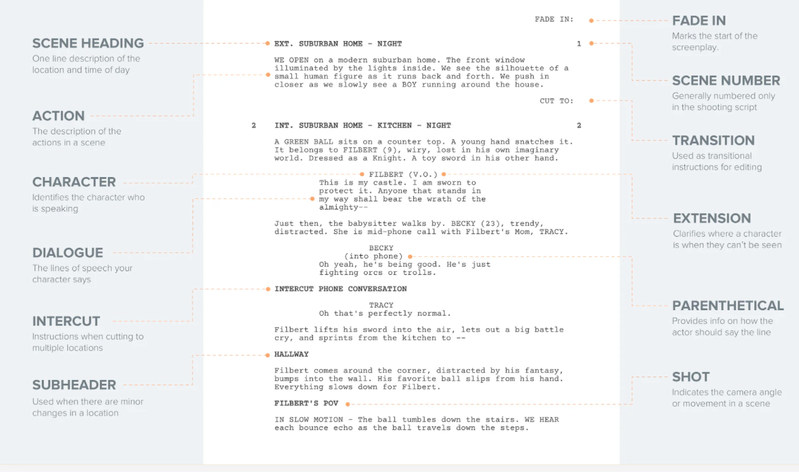

Many scripts begin with a transition, which may include FADE IN: or BLACK SCREEN. Some place this in the top left, others in the top right of the page where many transitions live. Other scripts will begin with scene headings, or even subheadings of imagery they want to front load.
SCENE HEADING
The scene heading is there to help break up physical spaces and give the reader and production team an idea of the story’s geography.
You will either choose INT. for interior spaces or EXT. for exterior spaces. Then a description of the setting, and then the time of day.
Here’s a screenplay example:
There are rare cases where the scene begins inside and goes outside, or vice versa, and in these situations you may write INT/EXT. or EXT/INT.
Some scripts take place all around the world, so often screenwriters will use multiple hyphens to give the scene headings even more detail:
This helps the screenwriter avoid having to point out the geographical location in the action lines, saving space to write more about the actual story and keep readers engaged in the story… not the formatting.
SUBHEADING
Often, writers will use subheadings to show a change in location without breaking the scene, even if the scene has shifted from INT. to EXT.
Here’s a script example:
It is assumed that readers will understand the change in space while retaining the idea that the time of day is the same - even continuous.
The reason many writers do this is to avoid the notion that we’ve entered an entirely new scene, though you could always include CONTINUOUS in place of DAY or NIGHT by creating an entirely new scene heading.
It’s a matter of personal style and rhythm vs. production considerations.
TRANSITIONS
In the bottom right of the page you will place transitions, but in modern screenwriting these seem to be used less and less. The transitions that seems to have really stood the test of time are CUT TO: and FADE OUT.
Here’s a screenplay example:
You may also include something like DISSOLVE TO:, but these are used less and less, probably for the same reason you avoid camera shots.
CHARACTER INTRODUCTIONS
When you introduce a character in a screenplay, you want to use all-capital letters for the name of the character, then a reference to their age, and finally some information about their traits and personality.
Here’s a screenplay example:
Again, screenwriters have found other ways to do this, but this is the most common and production friendly way to introduce a character.
We have a post on how to introduce characters in a screenplay that goes into the creative considerations of introducing characters, so I highly recommend you check it out after this post to learn more.
ACTION
Action lines are where you describe the visual and audible actions that take place on screen. You want to write in third person in present tense.
Here’s a script example:
Often, you can make your script a better read by eliminating redundant pronouns and conjunctions. Big sounds and important objects can be written out in ALL CAPS to emphasize their effect on the story.
DIALOGUE
Your lines of dialogue will be set underneath the character to which they are assigned. Dialogue is pretty straightforward from a formatting standpoint, but it is the most difficult part of screenwriting.
If you want to learn more, check out our post on 22 Screenwriting Tips for Writing Better Dialogue where I go over a bunch of ways to audit your screenplay for good… and bad dialogue.
EXTENSIONS
These occur when a character says something off-screen (O.S.), or if dialogue is voice-over (V.O.). You will see extensions when a character ends a block of dialogue, performs an action, and speaks more.
Here’s a script example:
This takes the form of continued (CONT’D). Professional script writing software will help you with this, but it will not be able to predict when you want something said off screen or in voice-over.
PARENTHETICAL
You can use a parenthetical inside your dialogue to show small actions, or even a change in mood without having to jump out to an action line.
Here’s a screenplay example:
Parentheticals are really good for directing actors, and adding sarcasm and nuance to performances on the page, but you may want to be cautious about adding them too much. Actors are professionals, and if Al Pacino finds parentheticals in a script, he may get his feelings hurt.
CAMERA SHOTS
The best professional screenwriters know how to suggest shots without actually writing in shots, but if you really insist on describing a particular shot in your screenplay you can format it like a subheading.
Here’s a script example:
This lets us know that the shot is supposed to be set so that we see things from Filbert’s perspective. Writing out shots is often frowned upon, but if you’re directing the film, maybe do it sparingly.